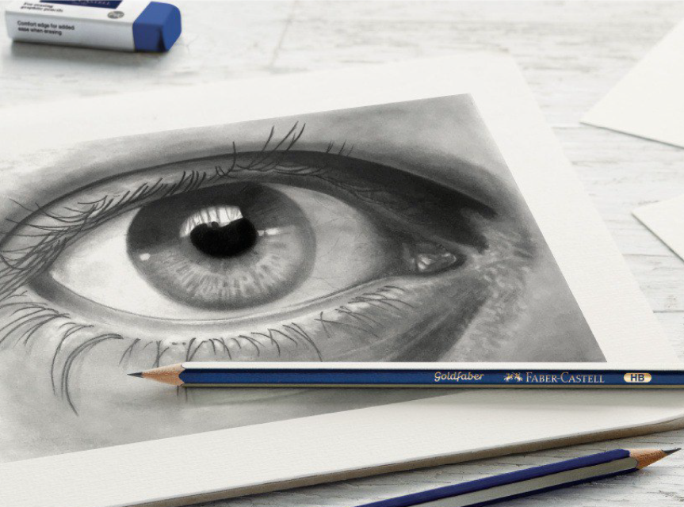

ЧТО ТАКОЕ БЛЕФАРОПЛАСТИКА?
Другие операции
Блефаропластика - это хирургическая операция, которая направлена на устранение имеющихся деформаций в виде избытка кожи, жировых грыж в области верхнего или нижнего века, выпячивание слезной железы. Избыточная кожана веках может создавать не только эстетические проблемы, но и ограничивать зрение. Блефаропластика проводитсякак для косметических целей, так и для улучшения обзора, если избыток кожи мешает видеть.
Существует два основных типа блефаропластики: верхняя и нижняя. Верхняя блефаропластика - это процедура,при которой удаляется избыточная кожа на верхнем веке, а также жировые грыжи, которые могут создавать мешкипод глазами. Нижняя блефаропластика - это процедура, при которой удаляется избыточная кожа и жировые отложенияна нижнем веке.

Показания:
- Избыток кожи на веках
- Асимметрия век
- Мешки или грыжи век
- Эпикантус - азиатское веко
Противопоказания:
- Острые инфекции, в том числе вирусные заболевания
- Хронические заболевания, которые могут ухудшиться после операции
- Беременность или кормление грудью
- Психические заболевания, которые могут привести к нарушению восстановления после операции
- Иммунодефицитные состояния и аутоиммунные заболевания
- Некоторые заболевания кожи, такие как экзема, псориаз и акне
- Некомпенсированный сахарный диабет
- Онкология
- Менструации у женщин
КАКОВЫ ПЛЮСЫ БЛЕФАРОПЛАСТИКИ?
Блефаропластика может значительно улучшить внешний вид глаз, придавая лицу более молодой и свежий вид.Она может также улучшить обзорность, помогая вам видеть яснее, если избыток кожи мешает вашему зрению. Благодаря блефаропластике можно избавиться от мешков под глазами, убрать избыток кожи и расправить складки на веках,что значительно улучшит внешний вид и придаст уверенности в себе.
Одним из основных преимуществ блефаропластики является ее относительная безопасность. Операция проводитсяпод местным или общим наркозом и обычно не занимает много времени. К тому же, блефаропластика позволяет быстро пройти реабилитационный период и вернуться к привычному ритму жизни.
КАК ДОЛГО ДЛИТСЯ ВОССТАНОВЛЕНИЕ ПОСЛЕ БЛЕФАРОПЛАСТИКИ?

Обычно пациенты могут вернуться к работе и обычной жизнедеятельности через 7-14 дней после операции. Первые несколько дней после операции могут быть немного болезненными. Вам будут назначены специальные капли,для снижения отека слизистой глаза и профилактики присоединения инфекции. В течение первых недель после операции рекомендуется избегать интенсивной физической активности и не поднимать тяжелые предметы. Полное восстановление может занять до нескольких месяцев.
Важно помнить, что каждый пациент индивидуален, и время восстановления может отличаться в зависимости от многих факторов, таких как возраст, здоровье, наличие других заболеваний и т.д. Поэтому все пациенты консультируютсяи сопровождаются в течение всего периода лечения.
КАКИЕ МОГУТ БЫТЬ ОСЛОЖНЕНИЯ ПОСЛЕ БЛЕФАРОПЛАСТИКИ?
Как и при любой операции, есть риск осложнений после блефаропластики. Эти осложнения могут включать инфекцию, кровоизлияние, проблемы со зрением и другие редкие осложнения. Однако, если вы выбираете квалифицированного хирурга и следуете всем его инструкциям по уходу после операции, то риск осложнений минимален
Важно также уведомлять своего хирурга о любых необычных симптомах после операции, таких как сильная боль, отечность, кровотечение. На самом деле, большинство пациентов не испытывают серьезных трудностей при реабилитации после блефаропластики и быстро восстанавливаются.
КАК ВЫБРАТЬ ХИРУРГА ДЛЯ БЛЕФАРОПЛАСТИКИ?
Выбор квалифицированного и опытного хирурга для блефаропластики очень важен. Не стесняйтесь задавать вопросыо квалификации и опыте хирурга, а также просматривать его портфолио работ и читать отзывы пациентов. Важно также найти хирурга, с которым вы чувствуете себе комфортно и у которого есть опыт работы с подобными случаями.
Портфолио


Сервис
- Очный / онлайн прием
- Предоперационные исследования и рекомендации
- В клинике: комфорт и медицинская безопасность
- Реабилитация и рекомендации